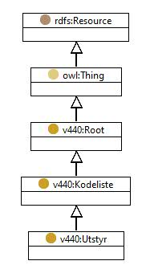

http://rdf.vegdata.no/v440-owl#Utstyr
Class Utstyr

v440:avsnitt
V-8
V-7.H
v440:kapitel
V-8
V-7
v440:kode
H
-
rdf:type
owl:Class
rdfs:label
Utstyr
rdfs:subClassOf
v440:Kodeliste
References
as rdfs:subClassOf (
v440:Utstyr_Rekkverkstyper
,
v440:Utstyr_Ledninger_kabeltyper_og_ror
,
v440:Utstyr_Lagertyper
,
v440:Utstyr_Instrumenttyper
,
v440:Utstyr_Guardrailtyper
,
v440:Utstyr_Fugetyper
,
v440:Utstyr_Fugeterskeltyper
,
v440:Utstyr_Belysningstyper
,
v440:Utstyr_Avlops_og_drenstyper
)
Generated with
TopBraid Composer
by
TopQuadrant, Inc.